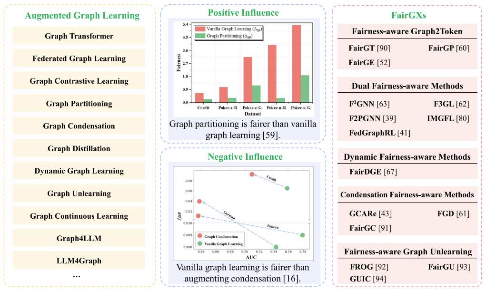

I am a Lecturer in Data Science and Artificial Intelligence at the School of Computing Technologies, RMIT University. Before joining RMIT, I was a CERC Fellow at Data61, CSIRO. I obtained my Ph.D. from University of South Australia and my Master’s degree from The University of Adelaide; these institutions have now been integrated into the Adelaide University. I have a broad interest in Responsible AI, particularly in causal inference, fairness, and explainable AI. My long-term goal is to build machine learning systems that are efficient, robust, fair, and interpretable.
News
[07/2026] CALL FOR PAPERS: International Workshop on Architecting Agentic AI Systems (AgentArch 2027), co-located with IEEE ICSA 2027. Submission deadline: December 20, 2026. [HTML]
[09/2026] Fully funded BITS-RMIT PhD (January 2027 intake): Project ID: BRJP26100105; Project title: Agentic Reasoning for Vision-Language-Action Models in Autonomous Robots. Application deadline: October 10, 2026. [LINK/HTML]
[09/2026] Three of our papers (x3) were accepted by NeurIPS 2026!
[08/2026] Two of our papers (x2) were accepted by EMNLP 2026!
[08/2026] Two of our papers (x2) were accepted by ICDM 2026!
[08/2026] Three of our papers (x3) were accepted by CIKM 2026!
Highlight Papers

IEEE Transactions on Knowledge and Data Engineering (TKDE)